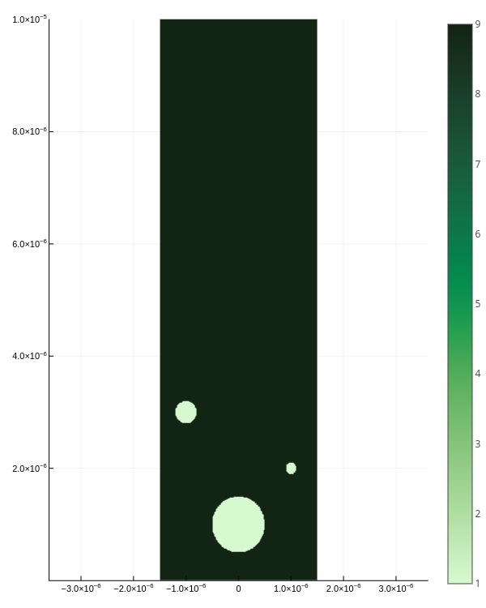

Simulation
There are two way to construct a Simulator with uniform permittivity.
Construct simulator by parameter
s = Simulator(
max_x=3e-6, max_y=10e-6, max_t=0.1e-12, # calculation boundaries
nx=300, ny=1000, # discretization
λ=2.04e-6, # wavelength of light
ϵ = 9., μ = 1. # permittivity and permeability
)Construct simulator by components
Declare constants
# calculation boundaries
max_x = 3e-6
max_y = 10e-6
max_t = 0.1e-12
# discretization
nx = 300
ny = 1000
# wavelength of light
λ = 2.04e-6
# permittivity and permeability
ϵ = 9.
μ = 1.Construct components
grid = Grid(max_x, max_y, max_t, nx, ny)
light = Light(λ)
permittivity = Permittivity(ϵ, grid)
permeability = Permeability(μ, grid)Construct simulator
s = Simulator(grid, light, permittivity, permeability)Implant defect to modify permittivity
# ##########
# # const. #
# ##########
# calculation boundaries
max_x = 3e-6
max_y = 10e-6
max_t = 0.1e-12
# discretization
nx = 300
ny = 1000
# wavelength of light
λ = 2.04e-6
# permittivity and permeability
ϵ = 9.
μ = 1.
# defect
ϵ_defect = 1.
xs_defect = [0, 1e-6, -1e-6]
ys_defect = [1e-6, 2e-6, 3e-6]
rs_defect = [0.5e-6, 0.1e-6, 0.2e-6]
# ##############
# # components #
# ##############
grid = Grid(max_x, max_y, max_t, nx, ny)
light = Light(λ)
permittivity = Permittivity(ϵ, grid)
permeability = Permeability(μ, grid)
implant!(permittivity, ϵ_defect, xs_defect, ys_defect, rs_defect, grid)
# #############
# # simulator #
# #############
s = Simulator(grid, light, permittivity, permeability)Or
ϵ_defect = 1.
xs_defect = [0, 1e-6, -1e-6]
ys_defect = [1e-6, 2e-6, 3e-6]
rs_defect = [0.5e-6, 0.1e-6, 0.2e-6]
s = Simulator(
max_x=3e-6, max_y=10e-6, max_t=0.1e-12, # calculation boundaries
nx=300, ny=1000, # discretization
λ=2.04e-6, # wavelength of light
ϵ = 9., μ = 1. # permittivity and permeability
)
implant!(s.permittivity, ϵ_defect, xs_defect, ys_defect, rs_defect, s.grid)Run simulation
simulate!(s)To see permittivity:
plot_ϵ(s)
To sea the result:
plot_e_field(s)